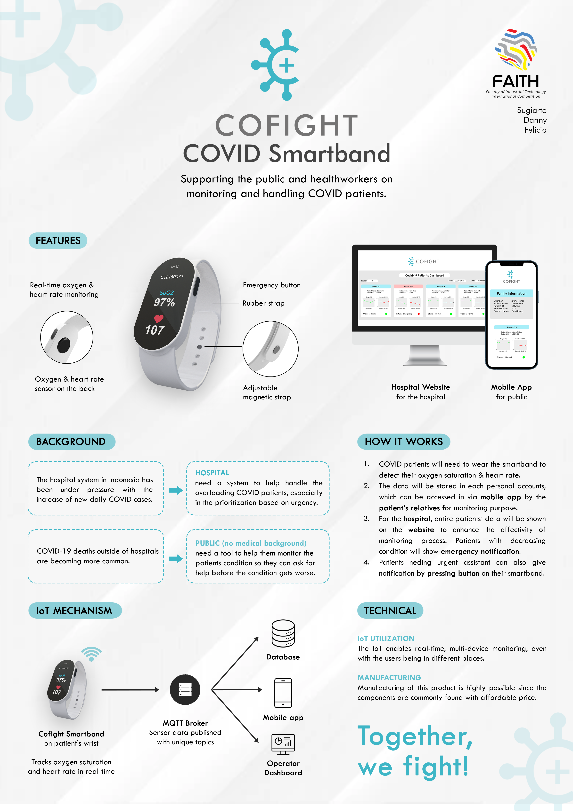

Embedded Programming · Internet of Things
CoFight — A COVID-19 Wristband IoT Device

🏆 Award Winner
Built for the Faith International Competition, Faculty of Industrial Technology, Petra Christian University (2021) — 2nd place, Electrical Engineering category.
Overview
The brief: design an IoT product to optimize COVID-19 health protocol compliance. As case counts rose, hospitals became overloaded and could only prioritize the most urgent patients — the rest self-isolated, but still needed daily monitoring from an already-stretched health workforce. Our team built CoFight (COVID-19 Fight), a wristband that tracks a patient's oxygen saturation and heart rate, viewable through a web dashboard. As team lead, I managed schedules and meetings, and built the wristband's firmware and hardware along with the website's front and back end. Two teammates from Mechanical and Architecture Engineering supported the submission video, presentation, and poster.
System Architecture
Three parts: the wristband, the server, and the web interface. The wristband connects to Wi-Fi and periodically publishes oxygen and heart-rate readings over MQTT. Hospitals, health workers, and family can monitor patients through a browser on mobile or desktop.

The wristband itself splits into a main board and a charging board. The main board carries an ESP8266 MCU, a MAX30102 oxygen/heart-rate sensor, an OLED display, and two buttons — one for emergencies, one for power. The ESP8266's built-in Wi-Fi handles the connection to the server.


Demo
The demos below show the wristband sensing oxygen and heart rate, and the dashboard for monitoring patient data.
Acknowledgements
Big thanks to my teammates Felicia Darmanto and Danny Purnama for their work under a tight deadline — it paid off with 2nd place in the Electrical Engineering category.

- Mr. Handy Wicaksono, Head of Electrical Engineering, Petra Christian University — support throughout the competition
- Fakultas Teknologi Industri and the judges — selecting us as 2nd place winners
- Electrical Engineering, Petra Christian University — financial support
- And others who I couldn't mention individually